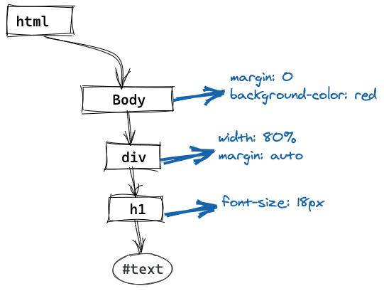

Critical Render Path
Pavel Litvinov
Этапы CRP:
-
Построение DOM-дерева
-
Построение CSSOM-дерева
-
Запуск скриптов
-
Создание Render tree
-
Компоновка объектов (viewport → layout)
-
Отрисовка (paint)
Построение DOM-дерева
Построение CSSOM-дерева
Загрузка блокирующих ресурсов
Создание Render tree

Компоновка объектов (viewport → layout) и отрисовка (paint)
Thaks!